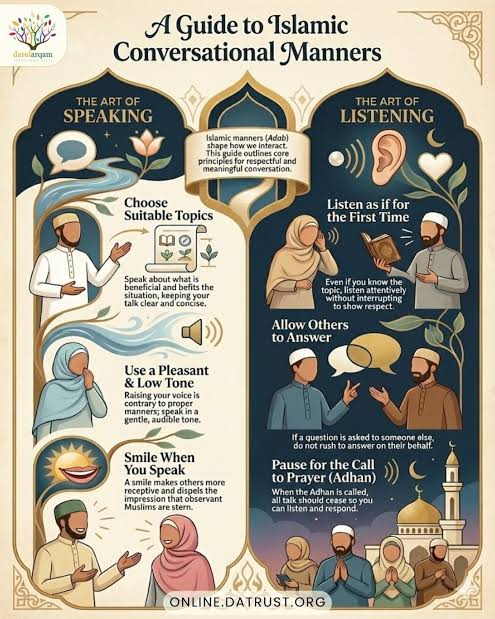
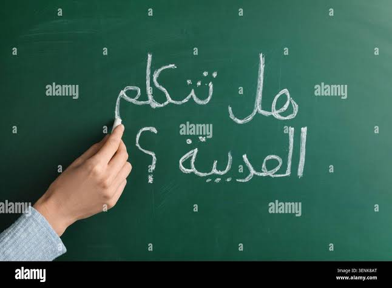
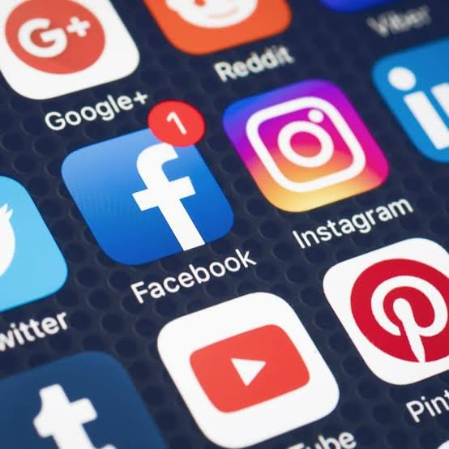

ommunication skills are central to IRS. Students learn to express ideas clearly, listen actively, and adapt their message to different audiences .
Information and Communication Studies (IRS) is a subject that teaches learners how to gather, analyse, present, and share information effectively. It covers communication skills, media, technology, research methods, and ethical responsibilities. IRS helps students develop the ability to communicate ideas clearly in speech and writing, and to understand how information shapes opinions and decisions.
Modern society depends on information flow through print, broadcast, and digital media. IRS teaches students to use these channels responsibly and to appreciate the role of information in education, government, business, and community life. It also encourages critical thinking about sources and the impact of messages on audiences.
IRS equips learners with the skills to understand, create, and share information in a world where communication matters more than ever.
Communication skills are central to IRS. Students learn to express ideas clearly, listen actively, and adapt their message to different audiences. Effective communication involves not only choosing the right words, but also using tone, body language, structure, and appropriate media. These skills are useful in school, work, and everyday life.

Communication skills include speaking with confidence, writing with clarity, and using visual aids to support ideas. Good communicators also practice listening carefully, asking questions, and giving constructive feedback. IRS develops these competencies through speeches, group discussions, interviews, and writing assignments.
Clear communication builds understanding, reduces conflict, and makes shared goals easier to achieve.
Verbal communication includes spoken language used in conversations, presentations, speeches, and interviews. It requires attention to voice tone, volume, pace, and pronunciation, as well as the choice of words and examples. In IRS, students practice both formal speaking and everyday conversations to improve confidence and clarity.
Students learn how to structure talks with introductions, main points, and conclusions. They also study techniques for asking questions, giving responses, and using persuasive language. Verbal communication is essential for leadership, teamwork, and everyday interaction.
When you speak clearly and listen well, you make your message powerful and your relationships stronger.
Written communication includes essays, reports, letters, emails, and messages. Good writing is clear, organized, and appropriate for the audience. IRS teaches students how to plan writing, choose the right words, and edit their work carefully. Writing skills help learners share ideas in school and beyond.

Students practice writing paragraphs, essays, letters, and reports. They learn to use correct grammar, punctuation, and vocabulary. Writing also involves organizing information logically, using headings, and supporting ideas with examples. These skills are essential for academic success and professional communication.
Writing well means thinking clearly and making your ideas easy for others to follow.
Media and technology shape how people receive and share information. IRS covers print media, radio, television, and digital platforms such as websites, social media, and mobile apps. Students learn how media messages are created and how technology affects communication speed, reach, and reliability.

Understanding media includes analysing headlines, advertisements, news reports, and social media posts. Students study how different media shape opinions, influence behaviour, and can spread false information. Technology also offers tools for creating presentations, videos, and digital stories that convey ideas clearly.
Media and technology amplify messages, so users must choose content wisely and share responsibly.
Information management means finding, evaluating, organizing, and using information effectively. IRS teaches students how to search for reliable sources, take notes, and reference information correctly. This skill helps learners complete research projects, write reports, and avoid plagiarism.
Students learn how to distinguish between facts, opinions, and propaganda. They also practice using libraries, textbooks, interviews, and online resources. Organizing information into categories and summaries makes it easier to understand and present. Information management is vital for academic research and everyday problem-solving.
Good information management turns data into knowledge and helps people make better decisions.
Ethics in IRS involves using information honestly, respecting others’ privacy, and avoiding harmful content. Social responsibility means considering the impact of messages on individuals and communities. IRS encourages learners to communicate with integrity and to use information to support fairness, kindness, and the common good.
Students examine ethical issues such as censorship, cyberbullying, fake news, and copyright. They learn to ask whether a message is true, helpful, and respectful before sharing it. These lessons help shape responsible citizens who use communication for positive change.
Responsible communication respects truth, protects rights, and strengthens trust between people.
IRS includes planning and presenting projects clearly and creatively. Project planning involves choosing a topic, researching, organizing information, and preparing visuals or spoken presentations. Presentations should be engaging, easy to follow, and supported by facts or examples.
Students learn to use charts, posters, slides, and role-play to convey ideas. They also practise working in groups, giving feedback, and responding to questions. Strong presentation skills help learners share knowledge effectively with classmates and community members.
A good project is well planned, carefully researched, and presented with confidence.